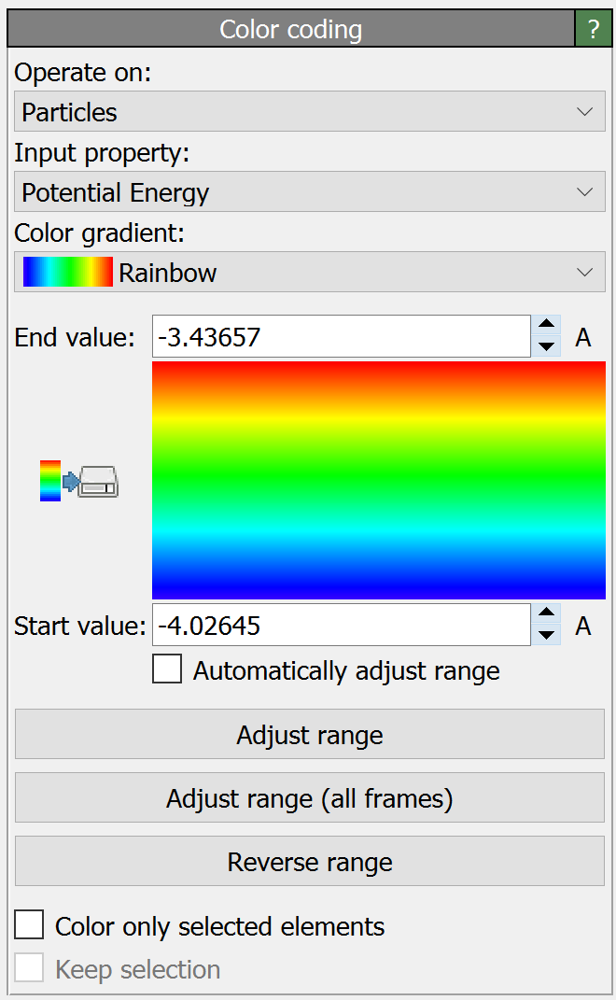

Color coding
{kind=link}
This modifier assigns colors to particles, bonds, vector glyphs, voxels or surfaces according to a selected input property. It thus provides a simple way of visualizing local values by means of a color scheme.
The field Operate on selects the type of data elements the modifier should assign colors to:
Operate on |
Description |
|---|---|
Particles |
Colors particles based on a local property. |
Bonds |
Colors bonds based on a local bond property. |
Particle vectors |
Colors vector glyphs by setting the |
Voxel grids |
Colors the cells of a voxel grid according to a local property. |
Mesh faces |
Colors the facets of a surface mesh according to a local property. |
Mesh vertices |
Colors the vertices of a surface mesh according to a local property. |
Mesh regions |
Colors the volumetric components of a surface mesh. |
Lines |
Colors Lines created by the Generate trajectory lines modifier or the or added using the |
The color getting assigned to an element (e.g. a particle) is determined by the modifier as follows: First, the value of the selected input property of the element is linearly mapped (and clamped) to the unit interval [0,1] according to the parameters Start value and End value of the modifier. The normalized value is then mapped to an RGB color based on the selected color gradient.
The function Adjust range resets the Start value and End value parameters to the current minimum and maximum of the selected input property, respectively. This ensures that no clamping of input values occurs for the current simulation frame. The function Adjust range (all frames) does the same but takes into account the entire simulation trajectory to determine the range of input property values. The function Reverse range simply swaps the Start value and End value parameters to effectively reverse the color scale.
Custom color gradients
The modifier offers a set of predefined color gradients that you can choose from. If you would like to define your own type of color map instead, select Load custom color map… from the gradients list. The program will ask you to pick an image file on your computer containing the custom color gradient. You can prepare such a file using any image editing program. OVITO will use the RGB colors of one row of pixels of the imported image to generate the user-defined color map. Here are two examples of color gradient images:

|

|
Color legend
If you want to include the color map of the modifier in rendered images or animations as a legend, add the Color legend layer to the active viewport.
Parameters
- Operate on
Selects the kind of data elements to be colored by the modifier (see table above). Note that the modifier lets you select only from those data elements that are currently present in the dataset the modifier receives as input from the data pipeline.
- Property
The input property of the data elements to be used as basis for the coloring.
- Color gradient
Selects the color gradient for mapping property values to colors.
- Start & end value
These parameters specify the source range of input property values getting mapped to the normalized [0,1] interval of the color map.
- Automatically adjust range
With this option turned on the modifier will dynamically adjust the start and end value parameters to the current min/max range of input property values.
- Color only selected elements
This option restricts the assignment of colors to currently selected particles or bonds. The colors of unselected particles or bonds will remain unchanged.
- Keep selection
OVITO highlights selected particles in red in the interactive viewports. Since this would mask the actual colors assigned by this modifier, the modifier clears the current selection by default. This option retains the current selection so that it remains available to subsequent modifiers in the data pipeline.
See also
ovito.modifiers.ColorCodingModifier (Python API)